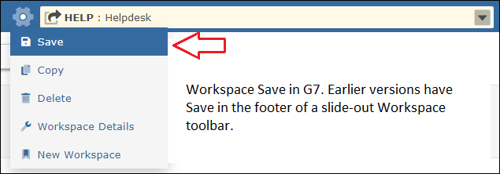
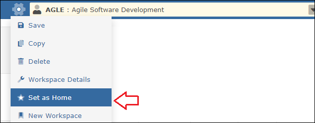
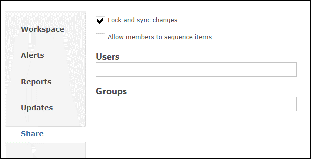
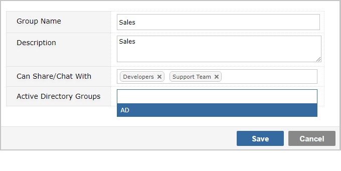
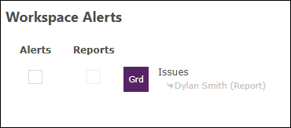
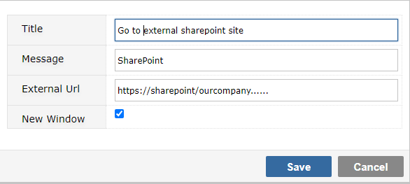
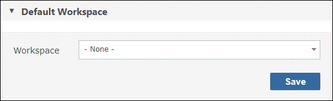
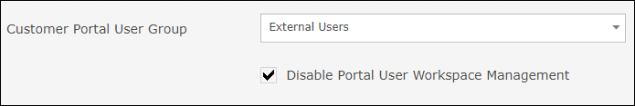
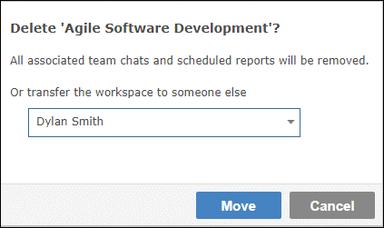

Each Workspace stores 5 view parameters. What you see is based on what the Workspace has stored. For every Workspace the parameters are:
You haven't saved the Workspace after changing it. If you don't save your changes, the Workspace will revert back to its last saved view as soon as it refreshes. This means you can dynamically select whatever you want by changing the filter, or changing the way that you see it by changing your view, without ever worrying that you need to keep track of multiple Workspaces. Only save the Workspace if you have made a change to its view or filter that you wish to make permanent, otherwise treat your Workspace as a default view that can dynamically retrieve and present any data you have access to in any way you wish.
If you have more than one Workspace, you need to set one of them as the default. If you drag-drop your Workspaces into order in G7, Gemini will set the top Workspace as 'Home', but if you have never done this, or explicitly used the "Set as Home" option then you have no default. Please Note: for obvious reasons, you will not see the 'Set as Home' option on your Home/Default Workspace
One other reason you may 'appear' to lose your home Workspace is that when other people share Workspaces with you, those shared Workspaces are shuffled to the top of your list, to ensure that you see them. They come into your list with a double-exclamation mark (!!). However, after a few seconds, they will lose the double exclamation and drop to the bottom of the list. In G7 you can identify shared Workspaces by the arrow in their icon, in G6 they have an arrow sticking out of the left-hand-side of the box.
First, if you just share a Workspace without Lock & Synch then other people have their own copy of the Workspace, they are not looking at yours. Therefore they can do what they like with the sequencing.
If you share with Lock & Synch you can also specify if the recipients are allowed to sequence items. If they can't then they have to view the items in the order you have specified and they cannot sort, filter or alter the order in any way. However, they can dynamically choose not to see the Sequence zone, but they cannot make that a permanent change to their view. As soon as the Workspace refreshes, the zone will be back.
Gemini doesn't allow sharing across the board. For each User Group you must define which other groups its members Can Share/Chat with (though Chat is deprecated). You can simply share with the User Group "Everyone" if you have no restrictions, but that works best if subsequent sharing is with individuals. Once your sharing Groups are defined, you can share with those User Groups as groups, or with individuals who are members of those groups.
Sharing groups are defined in User Group Maintenance
. Look in your User Profile on the Alerts tab. Any Workspaces that you are subscribed to by other people will appear here, and you can simply disable alerts and reports from those Workspaces.
Yes, if you are a Gemini Administrator, go to Configure Gemini...System...Workspaces, and select Workspace Ownership. Select the leaver's username, select the Workspace(s), and then select yourself or another user as the new owner of the Workspace(s). Click Move Workspaces and Gemini will change the ownership. The new owner can do what they want wit hthe Workspace.
Yes, if you are a Gemini Administrator, go to Configure Gemini...System...Workspaces, and select Custom Cards (the name comes from a time when Workspaces were represented as cards). Click on Add and the functionality is self-evident.
Yes, but this is a 2-stage process. First, in Configure Gemini...System...Workspaces you select one of your Workspaces that your external users will use. Don't worry if it filters All Projects and All Items, provided they are in the Can Only View Own Items role in the Project Permission Set(s) they will only see items they create or have been assigned to in the Resource field.
Step 2 is to go to Configure Gemini...People...Options and check the box to disable Workspace management for Portal users.
If you shared it without Lock & Synch, nothing, your copy of the Workspace will just be deleted. If you shared it with Lock and Synch, Gemini will give you the option to pass ownership of the Workspace to one of the people it is shared with. If you decline this option, the Workspace will be deleted for all users who have it.
